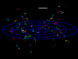
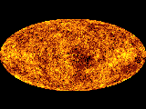
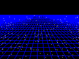
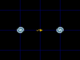

| ||
| Number of superclusters in the visible universe = 10 million |
| Number of galaxy groups in the visible universe = 25 billion |
| Number of large galaxies in the visible universe = 350 billion |
| Number of dwarf galaxies in the visible universe = 7 trillion |
| Number of stars in the visible universe = 30 billion trillion (3x10²²) |
| Additional Maps | |
|---|---|
|  | The universe has been partially mapped out to about 2 billion light years. Here is a map showing many of the major superclusters within 2 billion light years. |
|  | If we look far enough across the universe, we can see the faint glow of the Big Bang all around us. A map of this Cosmic Microwave Background Radiation is shown here. |
| Data and Catalogs | |
|---|---|
|  | This page is a brief explanation of the Big Bang and it explains how the universe is expanding and why there is no centre or edge of the expanding universe. |
|  | What exactly is the distance to the edge of the visible universe? How do you define distance in an expanding universe? This page tries to answer this difficult question. |
The visible universe appears to have a radius of 14 billion light years because the universe is about 14 billion years old. The light from more distant objects simply has not had time to reach us. For this reason everybody in the universe will find themselves at the middle of their own visible universe. The precise scale of the universe is complicated by the fact that the universe is expanding. Galaxies we see near the edge of the visible universe emitted their light when they were much closer to us, and they will now be much further away.
The true size of the universe is probably much larger than the visible universe. The geometry of the universe suggests that it may have an infinite size and that it will expand forever. Even if the universe is not infinite, our visible universe must be a minute speck in a much larger totality.
In December 1995, the Hubble Space Telescope was pointed at a blank area of the sky in Ursa Major for ten days. It produced one of the most famous astronomy pictures of modern times - the Hubble Deep Field Image. A part of it is shown here. Almost every object in this image is a galaxy typically lying 5 to 10 billion light years away. The galaxies revealed here are all shapes and colours, some are young and blue, whereas others are old, red and dusty. The Hubble Space Telescope has also produced two other similar pictures: the Hubble Deep Field South in 1998 and the Hubble Ultra Deep Field in 2004.
By collecting distances to thousands of galaxies in a narrow strip of the sky, it is possible to produce a slice of the universe, like this one shown below from The 2dF Galaxy Redshift Survey which looks out into the universe to 3.5 billion light years, although not much data was collected for galaxies beyond 3 billion light years. These types of plots show how clustered the galaxies in the universe really are, even on the largest scales. About 52 000 galaxies are plotted.